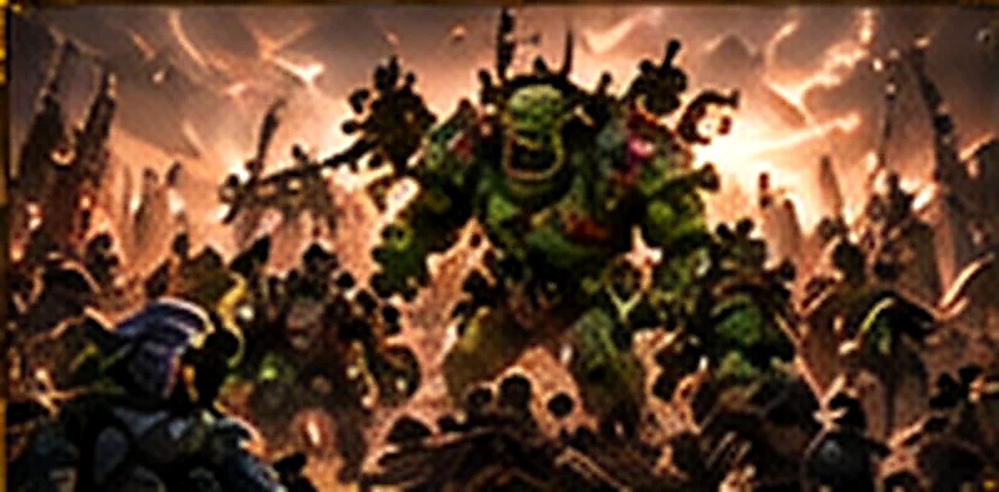
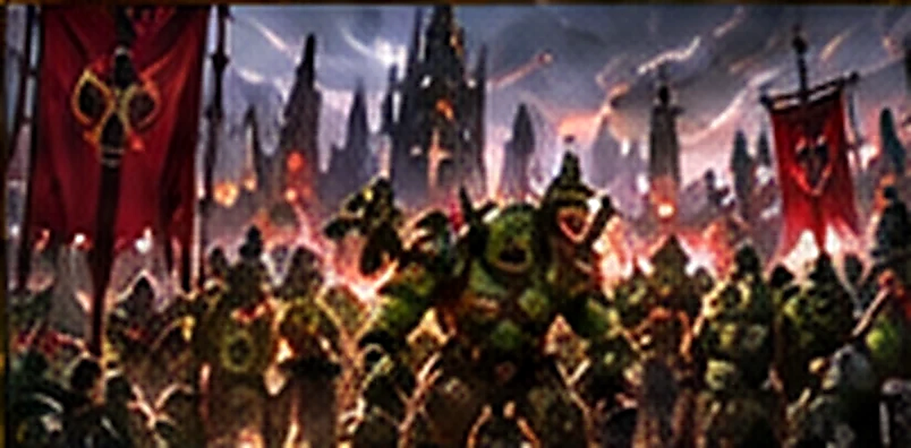
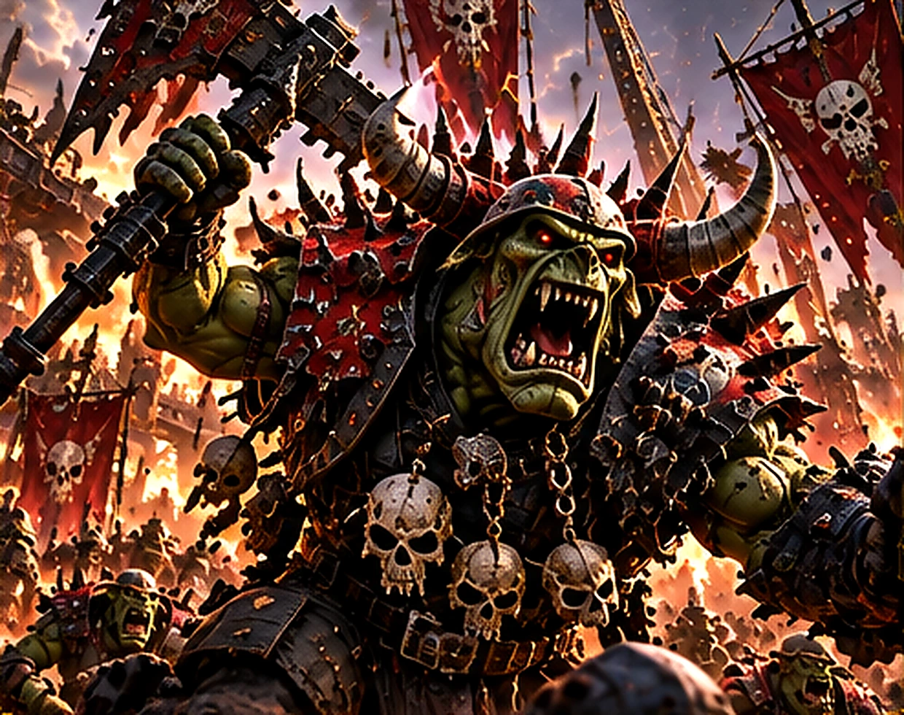
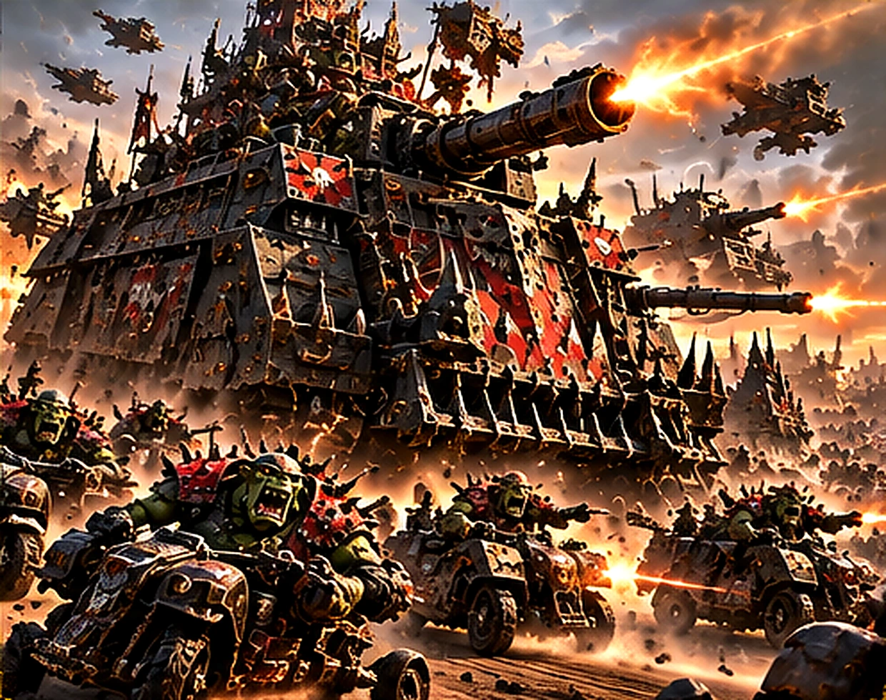
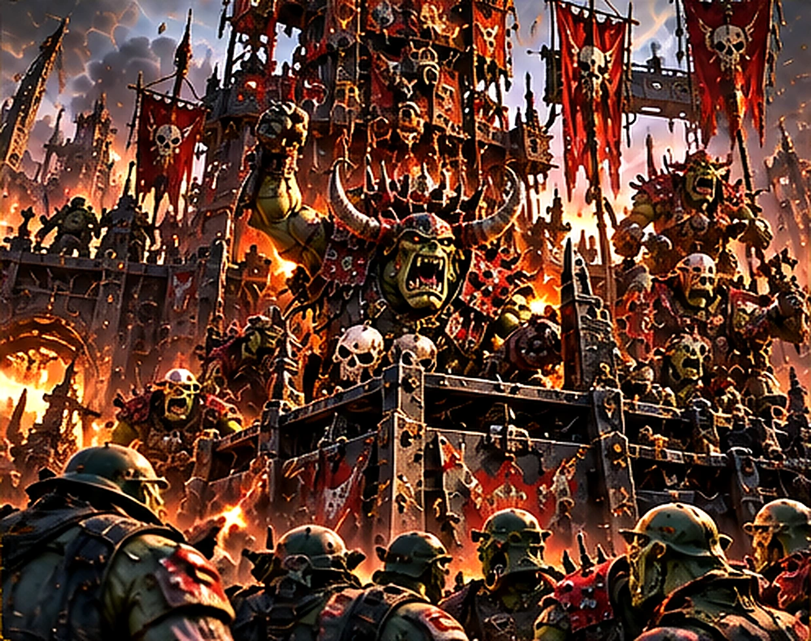
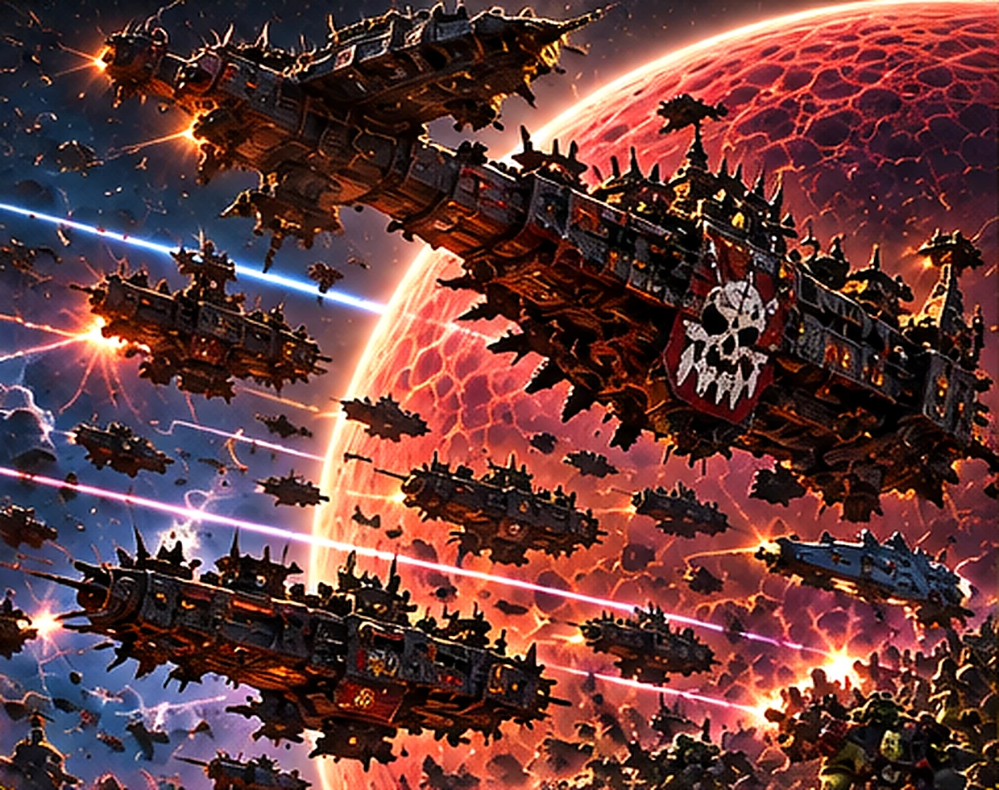

ORKS

Les Orks sont des xenos robustes, belliqueux et extraordinairement répandus. Pour eux, la guerre est à la fois une activité quotidienne, une source de prestige et une manière de vivre.
UNE CIVILISATION FAITE POUR LA BAGARRE

Les Orks sont des xenos robustes, belliqueux et extraordinairement répandus. Pour eux, la guerre est à la fois une activité quotidienne, une source de prestige et une manière de vivre.
Ils se rassemblent autour des chefs les plus forts et transforment leurs rivalités en invasions capables d’engloutir des systèmes entiers.
DES ORIGINES ANCIENNES

Leurs origines remontent à des âges presque mythiques de la galaxie. Leur biologie particulière favorise leur prolifération et rend leur éradication extrêmement difficile.
Les Orks ne bâtissent pas un empire unifié : leurs bandes et leurs clans se disputent sans cesse le pouvoir, jusqu’à ce qu’un grand chef les rassemble.
LES CLANS ET LES BOYZ

Les Boyz constituent le cœur des bandes orks. Les Nobz dominent par la force, tandis que les Warbosses imposent leur autorité à des hordes de plus en plus vastes.
Les Goffs aiment le combat direct ; les Evil Sunz privilégient la vitesse ; les Bad Moons exhibent leur richesse et leur puissance de feu.
MEKBOYZ ET MACHINES DE GUERRE

Les Mekboyz assemblent des armes, des véhicules et des engins gigantesques à partir de pièces récupérées. Le résultat paraît chaotique, mais peut s’avérer redoutablement efficace.
Trukks, motos, marcheurs et Gargants accompagnent les bandes dans des assauts bruyants où l’ingéniosité brutale remplace souvent la standardisation.
LA PUISSANCE D’UNE WAAAGH!

Une Waaagh! naît lorsqu’un chef suffisamment puissant fédère les bandes et déclenche un élan de conquête. Des masses d’Orks affluent alors vers les mêmes champs de bataille.
Ghazghkull Mag Uruk Thraka est l’une des figures majeures de cette menace, capable d’inspirer des campagnes qui dépassent un seul monde.
UNE MENACE IMPOSSIBLE À IGNORER

Une invasion ork ne se limite pas à une bataille : les spores et les survivants peuvent entretenir le conflit bien après la défaite d’une armée.
Dans Total War: Warhammer 40,000, les Orks promettent une identité de faction fondée sur l’élan offensif, les hordes et les machines improbables ; le fonctionnement exact du jeu reste à découvrir.